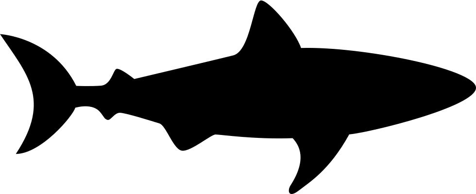

I have a strong background in medicine. I am an RN and was a fertility nurse for 10 years at a well respected fertilty practice in Carmel, IN. I used my organizational and project management skills as an IVF Coordinator and Third Party Cycle Coordinator. During my time at that job, I was the Super User and Trainer for our EMR and was then hired by the company that desined that EMR as the Trainer and Implementation Manager. I also took part in helping the developers create the best product for our users as a consultant between the medical staff and our development team. My hope is to continue along those lines and mix my medical background and my coding knowledge to help bring the best products to the endusers.
Martial Arts
I have recently started taking Krav Maga and I am loving it. I have a background in various forms of dance and have always been very athletic.Krav Maga allows me to enjoy the athletisism I crave and empowers me to be able to protect myself if ever the need arises.
Sharks

I have had a life long love of Sharks since I did a project on them in grade school. I collect all things shark and am a dedicated viewer of shark week and any documentary I can watch. Shark conservation is a passion of mine as they are an apex predator that are necesasry to keep our oceans healthy. One day I hope to cage dive with Great Whites so I can see their beauty in person.
Reading
I am an avid reader and have been known to read 65 books a year. My main genre is romance but I love mysteries, non-fiction and fiction as well.